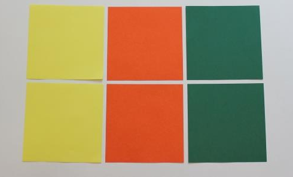

Mathe Experiment: Oktaeder Falten!
Willkommen zu einem weiteren spannenden Experiment! Dieses Mal wirst du ein faszinierendes Origami-Oktaeder erstellen. Folge den Anweisungen Schritt für Schritt und beobachte, wie aus einfachen Papierblättern eine beeindruckende geometrische Form entsteht!
Was du brauchst:
- Sechs quadratische Blätter Papier in drei verschiedenen Farben

So geht's:
- 1. Halbiere das erste Blatt entlang der Mitte und falte es wieder auf.
- 2. Drehe das Blatt um 90 Grad, halbiere es erneut und falte es wieder auf.
- 3. Lege die Rückseite nach oben und falte eine Diagonale. Falte es wieder auf.
- 4. Falte die andere Diagonale und lege das Blatt so, dass eine Spitze nach unten zeigt.
- 5. Schiebe die oberen Ecken zur Mitte hin, sodass ein Stern entsteht.
- 6. Wiederhole die Schritte 1 bis 5 mit den anderen fünf Blättern.
- 7. Halte eines der Teile mit der Spitze nach unten und der offenen Seite nach oben.
- 8. Stecke einen Zacken eines andersfarbigen Teils in einen offenen Zacken des ersten Teils.
- 9. Wiederhole dies mit einem zweiten Teil in der gleichen Farbe.
- 10. Stülpe das zweite Teil locker über die oberen Zacken der ersten beiden Teile.
- 11. Stülpe zwei gegenüberliegende Zacken des fünften Teils über die Zacken der anderen Teile.
- 12. Schiebe alle Teile vorsichtig zusammen. Keine zwei Dreiecke derselben Farbe sollten sich berühren.
- 13. Wiederhole den letzten Schritt auf der gegenüberliegenden Seite mit dem letzten Teil.


Tipps:
- Wähle die Farben nach deinem Geschmack.
- Vergleiche dein Oktaeder mit einer Zeichnung aus dem Internet, um die Symmetrie und Struktur zu verstehen.
Fertig!

Jetzt kannst du die faszinierende Form deines Oktaeders bewundern! Welche geometrischen Zusammenhänge kannst du entdecken?